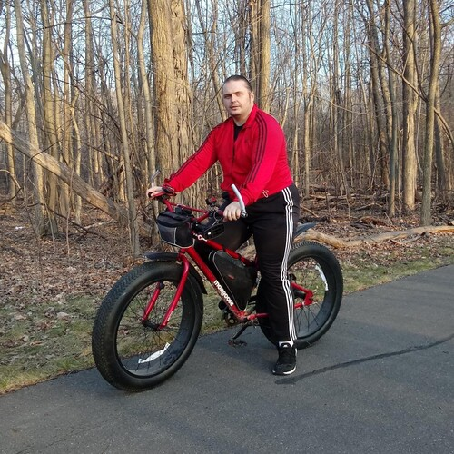

A Workout That Will Work Out

A Workout That Will Work Out
Above all, all the heavy people in the word,
work out a lot, year after year building muscle under all that weight.
Getting into exercise can be hard,
depending how large we get.
Dieting, is complicated because we need food,
it is not OK to just stop eating.
In this little poem,
I will explain how to get started.
You will need to change your daily routine,
because 20, 30, maybe 40 years of your life is at stake, here.
While it is not true, overeating does signal the you don't care about yourself,
or spending those extra 20 - 40 years with your loved ones.
Let us correct this,
and never look back.
First of all and half-jokingly speaking in order to illustrate change of routine,
if you can, please safely get rid of your refrigerator, stove, microwave, grill, skillet and electric skillet, pots and pans, and toaster.
If you upset your loved ones,
just tell them that this is your way of showing that you do care, and want to be around for a long looong time because you love them.
Alternatively you can buy a bunch of little luggage locks,
and thread them through the holes in the plugs... and throw away the keys.
And if you tried all this already, and none of it worked,
just cut off the plugs, but be very careful with your stove, it is better to get rid of the skillet, pots and pans, or call a professional to remove the stove.
I expect you will do such a thing in your imagination, or maybe unplug something,
but this will immediate put you in a different world.
Because how are you going to heat up your fancy burrito,
you won't, because the burrito in not a good thing, it was trying to murder you all along.
Once you take a step back, and consider how much ketchup, dressing, and salt, and pepper, you were adding to things,
you will realize that the real taste of most of the foods you like it not all that good, and it gets a lot worse the more you eat.
I mean if you have to drown something in spices and condiments,
it is not that tasty, plus it is trying to kill you, in multiple ways, and all of them are awful.
Food is only meant to give us energy and keep us healthy,
comfort is to be found in adventure.
Big adventure,
big change.
Begin walking, buy a large and comfy seat and begin riding your bicycle,
and try to go out there early in the morning when it is still dark, everything smells so nice in the morning.
And set your aim on the Appalachian Trail[1],
or the Pacific Crest Trail[2], whichever one is closer to you.
It is that walking routine,
that long trail that will help you get your weight under control.
Listen plenty of Narrated Books[3], and fill many a journal,
and know that the prize that you reach at the end of your adventure, is extra years added to your beautiful life.
Once you had enough of the trails,
begin your Couch to 5K jogging workout[4].
And once you are comfortably jogging at a nice pace,
take to dancing, more specifically Shuffle Dancing, and from time to time with dumbbells.
The truth is,
your life is very important.
Life has to be lived in a balanced way,
where we don't do things that shorten our life, but quite to the contrary.
Life can get scary, but it is still worth the while,
walking long trails and inventing new dance moves eventually becomes pretty silly and fun, and even beautiful.
There is nothing more important than your health,
tomorrow, maybe don't go to work, but go shopping for a nice pair of walking shoes with extra soft socks.
Make the Couch to 5K program, your friend,
instead of using it to jog, use it to improve your walking distance[5], don't worry about running it at first, just enjoy yourself.
I think the most important piece of advice I can give is, listen to Audio Books,
listen to books about marathon runners, nutrition, sugar, salt, and fat, and above all adventure books.
Year after year you will add a few extra years to your life,
and year after year discover how much your muscles grew in all those years of being heavy.
Be good to yourself,
and when you are ready, try to help others, and inspire them to long and great adventures.
A Workout That Will Work Out References
[1]: https://www.youtube.com/watch?v=hoykwShaw8M
[2]: https://www.youtube.com/watch?v=styiDn7YKhE
[3]: https://www.youtube.com/watch?v=5RrNtDWYIhc
[4]: https://www.youtube.com/watch?v=GjwpOig8eZM
[5]: https://www.youtube.com/watch?v=hzvv9qJnSv4